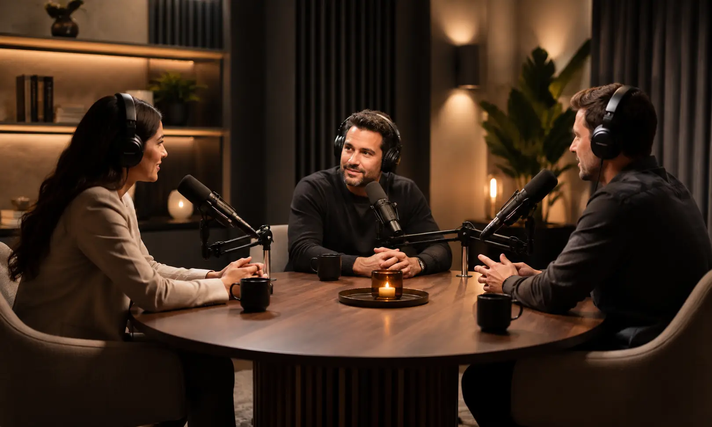
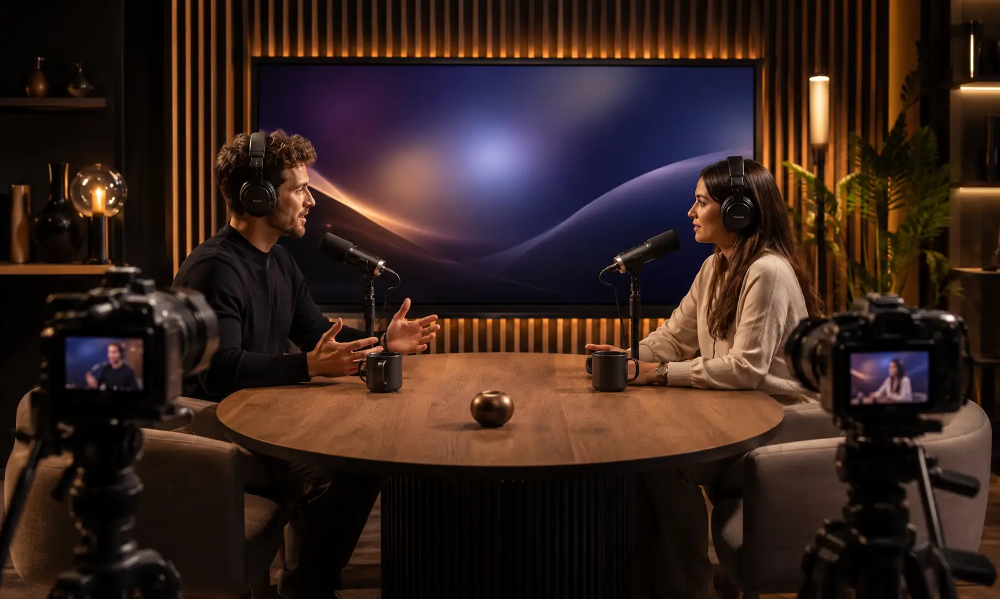
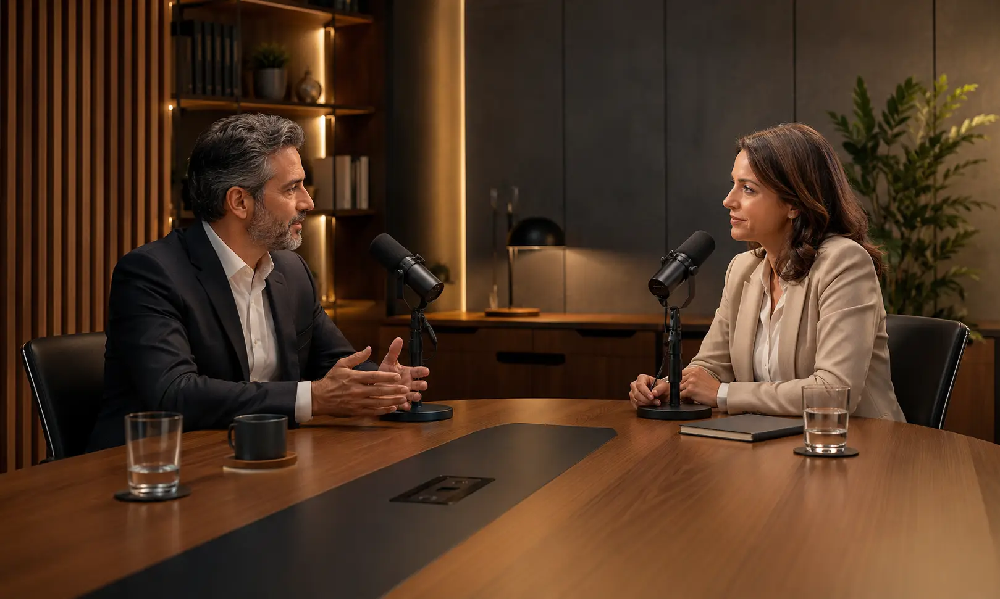
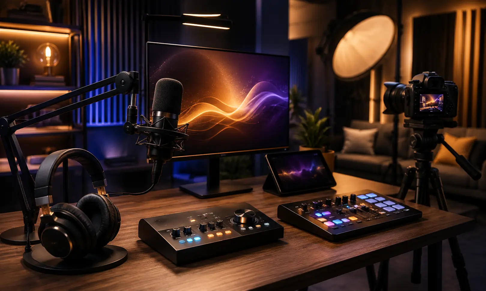
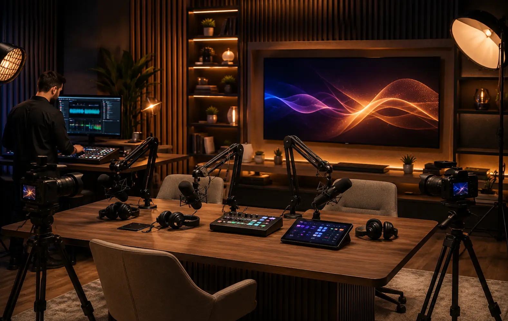

Audio y video para Podcast Profesional: captura, monitoreo y producción.
Diseñamos e integramos soluciones para podcast de audio, video podcast,
entrevistas, contenido corporativo y streaming.
Antes de seleccionar equipos
revisamos número de participantes, tipo de voz, ruido del espacio, entradas y salidas, ganancia,
monitoreo, cámaras, iluminación funcional, resolución, captura, conectividad, cableado y flujo
de operación.
Un podcast profesional empieza con una cadena de audio bien diseñada
La calidad de un podcast depende de toda la cadena: micrófono, distancia a la voz, patrón polar, ganancia, interfaz o consola, monitoreo, computadora, software, cámaras, iluminación y flujo de grabación o transmisión.
Diseñamos soluciones para creadores, empresas, marcas, agencias, comunicadores y productores que necesitan grabar entrevistas, episodios, video podcast, transmisiones o contenido para redes con una operación definida y posibilidad de crecimiento.
Captura adecuada para voz
Micrófonos y accesorios se seleccionan según patrón polar, sensibilidad, distancia de trabajo, ruido del entorno y número de participantes.
Entradas y salidas suficientes
Interfaces, consolas o grabadoras se dimensionan según micrófonos, llamadas, reproducción, monitoreo, grabación y crecimiento previsto.
Video definido por formato
Cámaras, encuadres, iluminación funcional y captura se plantean según número de participantes, resolución y plataforma de publicación.
Flujo de trabajo claro
Ruteo, monitoreo, grabación, video y streaming se organizan para que la operación corresponda con el equipo y el personal disponible.
Una cadena mal planteada puede limitar voz, video y operación
Ganancia insuficiente, micrófonos poco adecuados, monitoreo deficiente, ruido del entorno, entradas limitadas o una ruta de señal confusa pueden afectar la captura y complicar la producción. En video, encuadre, iluminación, resolución y sincronía también deben revisarse como parte del sistema.
Antes de recomendar equipo definimos cuántas voces y fuentes habrá, si existen invitados remotos, si el contenido será grabado o transmitido, cuántas cámaras se requieren, qué software se utilizará y qué capacidad futura necesitará el sistema.
Eco y ruido
Ruido, reflexiones, patrón polar o distancia de trabajo inadecuados pueden reducir inteligibilidad y aumentar la necesidad de procesamiento.
Audio desigual
Diferencias de distancia, sensibilidad o ajuste de ganancia pueden producir niveles desiguales entre participantes si no se controla la cadena.
Conexiones confusas
Interfaces, consolas, cámaras, capturadoras y software deben ser compatibles en conexiones, canales, resolución, drivers y flujo de señal.
Imagen descuidada
Encuadres, iluminación y posiciones de cámara deben definirse según participantes, espacio, fondo, formato y plataforma de publicación.
Integramos el flujo de audio y video según tu formato de podcast.
La solución se define según participantes, fuentes, espacio, ruido, entradas y salidas, monitoreo, cámaras, resolución, grabación, streaming, conectividad, equipos existentes y presupuesto.
Micrófonos para podcast
Micrófonos dinámicos, de condensador, alámbricos o inalámbricos seleccionados según voz, patrón polar, sensibilidad, movilidad, ruido y distancia de trabajo.
Interfaces y mezcladoras
Interfaces o mezcladoras seleccionadas según entradas, preamplificación, llamadas, reproducción, mezclas de monitoreo, salidas, grabación y conexión con computadora.
Audífonos y monitoreo
Audífonos, amplificación de audífonos y mezclas de monitoreo dimensionados según número de participantes y necesidades de referencia durante la sesión.
Video podcast
Cámaras, soportes, iluminación funcional, captura y conectividad definidos según participantes, encuadres, resolución, sincronía y plataforma.
Grabación y streaming
Grabación y streaming definidos según fuentes, software, plataforma, resolución, pistas de audio, redundancia requerida y flujo de publicación.
Soportes, cableado y accesorios
Brazos, bases, filtros antipop, adaptadores, distribución de señal y cableado seleccionados según conexiones, distancias y forma de operación.
Podcast listo para grabar: audio, video y operación en un solo flujo
Podemos integrar microfonía, interfaz o consola, monitoreo, cámaras, iluminación funcional, captura, cableado y control según el formato: entrevistas, podcast corporativo, video podcast, streaming o estudio personal.

Podcast de entrevistas
Video podcast
Podcast corporativo
Grabación y streaming
Solución integralUn proceso claro para equipar tu podcast
Un proceso estructurado para definir participantes, captura, monitoreo, video, software, conectividad y equipos antes de cerrar el proyecto.
Entendemos el formato
Definimos si será podcast de audio, video podcast, entrevista, streaming, contenido corporativo o un formato mixto.
Revisamos el espacio
Consideramos dimensiones, ruido, condiciones acústicas, iluminación, participantes, posiciones de cámara, energía, red y cableado.
Diseñamos la solución
Definimos micrófonos, preamplificación, entradas, salidas, monitoreo, consola o interfaz, cámaras, captura, software, señal y accesorios.
Cotización formal
Te entregamos alcance, equipos, servicios, tiempos, supuestos, exclusiones y pendientes técnicos por confirmar.
Integración
Realizamos suministro, conexión, configuración, pruebas y ajustes conforme al alcance aprobado.
Capacitación
Explicamos ganancia, monitoreo, ruteo, grabación, selección de fuentes y operación básica del sistema integrado.
No seleccionamos equipos aislados: diseñamos el flujo completo de producción
Un podcast requiere compatibilidad entre micrófonos, preamplificación, interfaz o consola, monitoreo, computadora, software, cámaras, capturadoras, iluminación y distribución de señal.
Nuestro enfoque es dimensionar entradas, salidas, monitoreo, captura y video según el flujo real para evitar cuellos de botella y facilitar futuras ampliaciones cuando el proyecto lo permita.
Tecnología profesional para podcast, grabación y creación de contenido
- Definición del formato y flujo de producción
- Dimensionamiento de entradas, salidas y monitoreo
- Equipos originales y tecnología profesional
- Integración de audio, video y captura
- Cableado y conexiones según el sistema
- Pruebas, ajustes y capacitación básica
- Capacidad de crecimiento según alcance
Marcas profesionales para soluciones de alto rendimiento
Seleccionamos tecnología profesional según captura, ganancia, entradas, salidas, monitoreo, video, conectividad, compatibilidad, operación y presupuesto.
Dudas comunes antes de equipar un podcast
Estas son algunas de las variables que revisamos antes de definir el alcance técnico y la cotización.
Diseñemos tu proyecto de podcast
Compártenos participantes, formato, espacio, audio, video, streaming, equipos existentes y etapa del proyecto para revisar el alcance técnico.
Equipemos tu estudio de
podcast
Podemos orientarte sobre microfonía, interfaces, consolas, monitoreo, cámaras, iluminación funcional, captura, streaming, cableado y actualización de un estudio existente.
Solicita asesoría para tu estudio de podcast
Completa el formulario y se abrirá WhatsApp con la información estructurada. Incluye participantes, formato, equipos existentes y si necesitas audio, video, grabación o streaming.